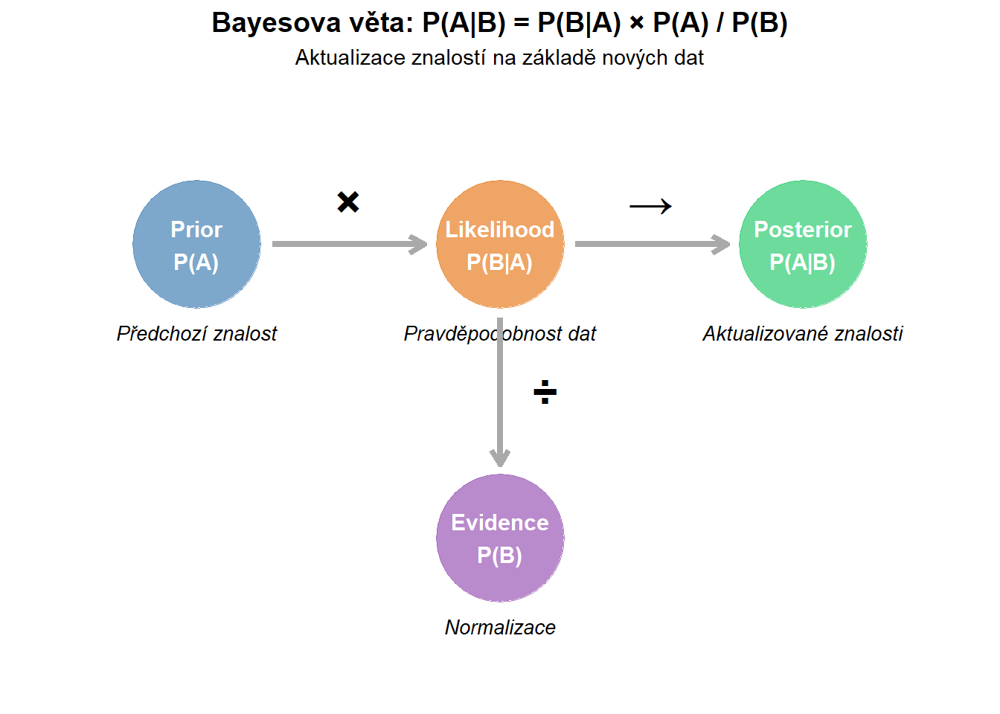

Bayesova věta vs. Frekventistický přístup ve statistice
Author
Filip Děchtěrenko
Published
September 20, 2025
Modified
December 7, 2025
Úvod
Statistika je široká věda, která se zabývá sběrem, analýzou, interpretací a prezentací dat. Dvěma základními teoretickými přístupy ve statistice jsou frekventistický přístup a Bayesův přístup, který využívá Bayesovu větu. Oba přístupy se používají k odhadování pravděpodobnosti událostí nebo parametrů modelů, ale liší se v metodologii a filozofii.
Frekventistický přístup
Frekventistická statistika je tradičním přístupem k interpretaci pravděpodobnosti, který chápe pravděpodobnost jako dlouhodobý poměr výskytů událostí. V frekventistickém přístupu je pravděpodobnost objektivní a měřitelná. Tento přístup bývá často používán při klasických statistických testech jako T-testy, ANOVA, apod.
Příklad: Házení kostkou
Představte si, že házíte férovou šestistěnnou kostkou. Frekventista by řekl, že pravděpodobnost hodu jedničky je 1/6, protože při dostatečně velkém počtu hodů by každý výsledek (1, 2, 3, 4, 5, 6) měl přibližně stejný počet výskytů.
Bayesův přístup
Na druhé straně Bayesovský přístup vede k subjektivnímu chápání pravděpodobnosti. Zatímco frekventistický přístup je postaven na častosti, Bayesův přístup využívá osobní znalosti a aktualizuje pravděpodobnost na základě nových dat. Klíčovým nástrojem je Bayesova věta, která slouží ke kombinaci předchozích znalostí s novými důkazy.
Bayesova věta
Bayesova věta vyjadřuje vztah mezi pravděpodobnostmi různých událostí:
\[ P(A|B) = \frac{P(B|A) \cdot P(A)}{P(B)} \]
\(P(A|B)\) je pravděpodobnost události A za předpokladu, že B nastalo (posterior)
\(P(B|A)\) je pravděpodobnost události B za předpokladu, že A nastalo (likelihood)
\(P(A)\) je apriorní pravděpodobnost události A (prior)
\(P(B)\) je pravděpodobnost události B (evidence)
Zobrazit kód
library(ggplot2)# Vytvoření diagramu komponent Bayesovy větycomponents <-data.frame(x =c(1, 3, 5, 3),y =c(3, 3, 3, 1),label =c("Prior\nP(A)", "Likelihood\nP(B|A)", "Posterior\nP(A|B)", "Evidence\nP(B)"),description =c("Předchozí znalost", "Pravděpodobnost dat", "Aktualizované znalosti", "Normalizace"),color =c("steelblue", "#E67E22", "#2ECC71", "#9B59B6"))ggplot(components, aes(x = x, y = y)) +geom_point(aes(color = label), size =30, alpha =0.7) +geom_text(aes(label = label), fontface ="bold", size =4, color ="white") +geom_text(aes(label = description, y = y -0.6), size =3.5, fontface ="italic") +# Šipky ukazující vztahyannotate("segment", x =1.5, xend =2.5, y =3, yend =3,arrow =arrow(length =unit(0.3, "cm")), size =1.5, color ="darkgray") +annotate("segment", x =3.5, xend =4.5, y =3, yend =3,arrow =arrow(length =unit(0.3, "cm")), size =1.5, color ="darkgray") +annotate("segment", x =3, xend =3, y =2.5, yend =1.5,arrow =arrow(length =unit(0.3, "cm")), size =1.5, color ="darkgray") +annotate("text", x =2, y =3.3, label ="×", size =8, fontface ="bold") +annotate("text", x =4, y =3.3, label ="→", size =8, fontface ="bold") +annotate("text", x =3.3, y =2, label ="÷", size =8, fontface ="bold") +scale_color_manual(values =c("Prior\nP(A)"="steelblue","Likelihood\nP(B|A)"="#E67E22","Posterior\nP(A|B)"="#2ECC71","Evidence\nP(B)"="#9B59B6")) +labs(title ="Bayesova věta: P(A|B) = P(B|A) × P(A) / P(B)",subtitle ="Aktualizace znalostí na základě nových dat" ) +xlim(0, 6) +ylim(0, 4) +theme_void() +theme(legend.position ="none",plot.title =element_text(hjust =0.5, face ="bold", size =14),plot.subtitle =element_text(hjust =0.5, size =11) )

Figure 1: Komponenty Bayesovy věty
Příklad: Diagnostika onemocnění
Majme test na určité onemocnění, který je pozitivní v 99% (senzitivita) u nemocných a v 95% negativní u zdravých jedinců (specificita). V populaci je prevalence onemocnění 1%. Frekventista by se mohl zaměřit na vlastnosti testu, zatímco bayesovec aktualizuje pravděpodobnost, že člověk je skutečně nemocný, pokud má pozitivní výsledek testu, pomocí Bayesovy věty.
V tomto případě bychom vypočítali:
\(P(A)\): Pravděpodobnost, že je člověk nemocný = 0.01
\(P(B|A)\): Pravděpodobnost pozitivního testu u nemocného = 0.99
\(P(B)\): Pravděpodobnost pozitivního testu celkově. To zahrnuje pravděpodobnost pozitivního testu u nemocných a zdravých.
Na základě těchto pravděpodobností bayesovec aktualizuje své přesvědčení o konkrétních výstupech.
Rozhodování: Použijte Bayesian (lepší pro risk management)
Best practice: Reportujte obojí!
Časté mýty:
❌ “Bayesian je vždy lepší” - Ne, záleží na kontextu
❌ “Prior je subjektivní → špatné” - Prior lze objektivně zvolit
❌ “p-hodnota je P(H0|data)” - NE! Je to P(data|H0)
Závěr
Bayesova věta přidává do statistiky flexibilnější a pragmatičtější přístup oproti frekventistickému. Umožňuje zařadit nové informace do již existujícího rámce vědění a dynamicky tak aktualizovat odhady pravděpodobnosti. Tento přístup může být zejména užitečný v reálném světě, kde nové důkazy mění pravděpodobnostní modely, například v medicíně, rizikovém managementu a umělé inteligenci.
Frekventistický přístup je však stále cenný pro svoji jednoduchost a objektivnost v případě nesmlouvavých statistických analýz s velkými množinami dat.